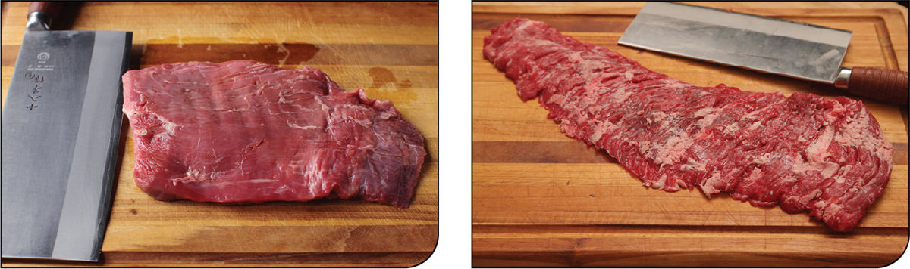
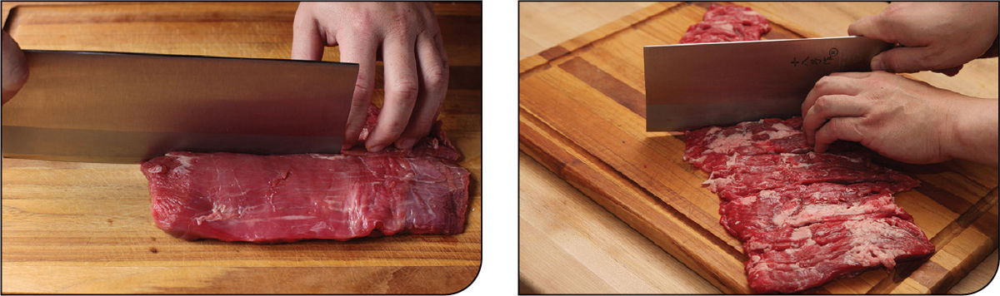
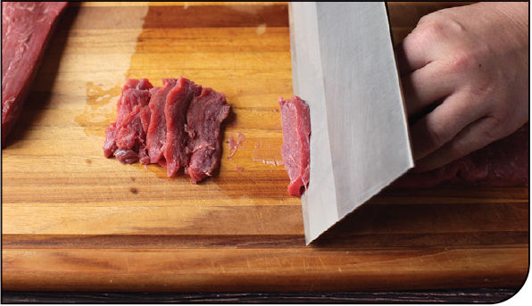
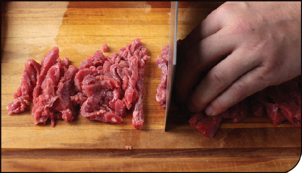

How to Cut Beef for Stir-Fries
As with chicken and pork, cutting beef for stir-fries is all about shortening muscle fibers to improve tenderness.
KNIFE SKILLS
Step 1 • Identify the Grain

Identify which direction the grain runs. For instance, in a flank steak (left) the grain runs lengthwise. In a skirt steak (right) the grain runs crosswise.
Step 2 • Cut into Strips with the Grain

Cut the meat into 2-inch-wide strips with the grain. With a flank steak (left) this results in about three long strips. In a skirt steak (right), you should wind up with around ten shorter strips.
Step 3 • Partially Freeze (optional)
If your knife isn’t perfectly sharp or you just haven’t quite got the hang of working with slippery meat, place the strips in the freezer for about 10 minutes.
Step 4 • Slice against the Grain

Hold a sharp chef’s knife or santoku knife at a shallow angle against the cutting board. Slice the meat at this angle into very thin strips. This will increase its surface area, allowing for better sauce adhesion and faster cooking.
Step 5 • Cut into Matchsticks

For dishes where beef is cooked in thin matchsticks, stack a few slices on top of each other and slice them lengthwise into matchsticks.